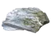

Mineral Grimoire

AnthophylliteAppearance
Lumpy or veined, vitreous to dull or translucent
Origin
United States, Canada, Germany, Sweden, Czech Republic, Finland, South Africa, India, Australia, China
Attributes
Anthophyllite helps you get to the bottom of things whether it be through the ancestral line, karmic connections or academic research. Attuned to serendipitous synchronicity and facilitating rapid retrieval of information, it acts as a library angel ferreting out sources seemingly by luck. The right book or website will fall into your hand when Anthophyllite assists in your search. Ask the stone to point you towards what is relevant – and to assist in understanding the deeper meaning of what you find. By taking you to a higher level to recognize the bigger picture, this stone integrates fragments of insight so that all becomes clear.
Anthophyllite facilitates exploring core beliefs that keep you mired in outdated patterns and old ways of behaving. It helps you to recognize where you people please, whether that be parents, authority figures or significant others. Meditating with this stone shows you the wider picture and assists in releasing that which no longer serves you, putting a more beneficial pattern in place through a Higher Self connection. With the assistance of Anthophyllite you align to your soul's plan and attract the people and experiences needed to play that out with ease.
The stone provides grounding and stamina. It is concerned with the assimilation and digestive processes that extract the nourishment your body and soul requires and excrete that which is no longer needful. It works with the blood-brain barrier, facilitating information retrieval and autonomous physiological processes by correct firing of neurotransmitters.
Healing
Anthophyllite reputedly assists digestive processes and aids breathing. It supports the cerebellum and anecdotal evidence suggests it may reverse degeneration in the brain, assisting Parkinson's, dementia and allied conditions.
Position
Hold over the abdomen, at the back of neck or grid as appropriate. Disperse gem essence around head. NOTE: Handle with care, avoid breathing the dust.